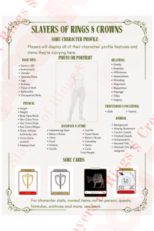
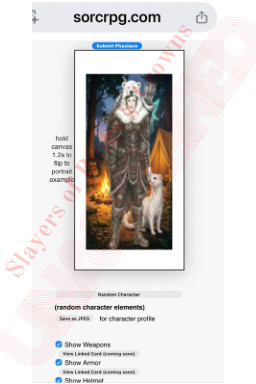
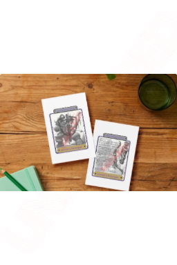
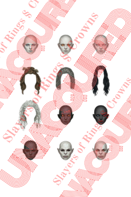
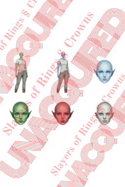

Building your character in SorC games begins through a detailed process of selecting race, class, and allocating attributes using a combination of dice rolls and point spending.
As characters level up, players repeat the beginning process of spending points generated through dice rolls, and any remnants they may have saved in their “register.”. These points are spent to unlock a choice of talents, skills and traits, called TSTs, or a combination of them all. Abilities are learned from trainers, and players get to choose any ability they want, and when they want as long as they meet its prerequisites. Refer to page 2. of “basic rules” for more on Abilities.
Progression works in the same manner at each level gained and it's all tracked via the character’s album made up by SorC Cards and profile pages to help players, and GMs, keep track of characters’ progress.
SorC Cards, typically kept in a card binder, serve as the central record-keeping tool, divided into sections like the character’s Profile page, which provides its personalized details. Some SorC Cards are attached to index cards to record data of the cards as their stats change. Below are two images of saving your character’s profile from our servers.

Above, is a profile page utilizing our mobile friendly character profile features.

Default character profile page, without server submissions.
In this image above, the player clicked the “save as JPEG” button, where they can save their character's profile to their device to be printed (uid not shown here).
As you can see, the profile page of your character is a profile of your character’s identification. The SorC Cards displayed here are: Armor, Weapons, Fellowships and Abilities/Spells. More on SorC cards and equipment are covered in sections of the respective subjects.
Below is a default Character Profile Page that allows players to draw their own Character's, but only with armor and/or attire they own, under their GM’s supervision.
There's a paid feature that allows players to save an AI api based high resolution portrait as their character, implementing all elements chosen. Below is an example of this.
Note: these are low res placeholders until this feature is completed.

AI rendered version of a female ranger, at her current hearth place, with her pet weasel and agothian by her side.
For players that choose to use our online features, requiring only a mobile device, there are limitless options of elements to choose from, only restricted by prerequisites, such as; race and progression.

Shown above, are female human options for creating your character.

Some of our female orc faces and hair.
A third description of female Draco Blood below.
Female Draco Blood visit and face examples.
Character Customization Beta (linked)
As you can see, the profile page allows for customization with images that reflect your character’s identity, and tracks essential details such as background, mission, prestige and standing - representing their reputation and moral compass.
Action Cards are dedicated to Combat, Vocational Talents and Professions, allocating each type of action separately to keep the pages clear, gameplay smooth and easy to navigate at the GMs direction.
Base cards are not editable, but they stack on editable index cards. For instance; if your base Weapon card gets an upgrade, you'll record it on the Weapon's index card.
Weapon Card example below.
Online demonstration of a flippable SorC Armor Card.
Refer to our section on SorC Cards - Basic Rules for more on this feature
Although the Journal is briefed on your character's profile page, Journal and Logs is where players record their characters’ ongoing progress, including but not limited to; quests, discoveries, secrets, notes and so forth. GMs and Platers both carry Journals and logs which makes it easier on both to remember the progress, especially when you've scattered about your quest, progression or just gone astray in the wild for days on end. Your Journal is also where players keep maps, location and hearth logs.
The Worksheet Pages assist with calculations and planning, and include simple formulas.
Additional pages like the Home and Family sections track personal life, resources, and relationships, making the album a comprehensive tool to build, develop, and role-play your character’s journey through the world of Essentia.
Finally, an Archives page is where you've recorded data not needed anymore, but can refer back to for your memory. This is mostly for nostalgic reasoning.
Player's Name, Nickname, UID, Character Portrait or Photo, Age, Gender and a Character Unique Identification (UID) which is a random 8 unit number/letter combination that is required by default for SorC Card acquisition and for tracking online data, such as; an auction house, black market and host vendor trading, achievements, adventure details, pvp through Trials of Combat (both wood and steel/magic versions) and more.
Character ID’s are RNG numbers provided by our servers and no two ID’s are alike, to avoid conflict between online Characters that have the same name and to keep track of both paid for and discovered entities.
Character Details are solely role playing Elements and the amount of detail provided here, is entirely up to the Player.
Race, Available for Beginner Set are Human, Blood Drãco, Gnoll and Dwarf (No sub races, like Ash Dwarf)
Playable Races linked under Resources (below)
Class, Available for Beginner Set are Avenger, Barbarian, Rogue and Wizard (no Sub or Variant Classes)
Playable Classes Linked under Resources (below).
Height, weight and frame, cultural style, crest, tattoos/marks/scars, facial features, eye color, hair color and style, skin tone, and voice tone. Not applicable (N/A) and Unknown (UKN) can be used to fill out any details at the players’ discretion.
This is where Characters list the items they have on their person. They can hold as many items as the Player wishes, without a penalty, as long as the total weight doesn't exceed their Burdened or Encumbrance Threshold.
Characters may also keep items in their Homes or on their land, if they rent or own it. However , each home has its own space threshold, see Home and Family Pages below. Players can also bury or stash items, and log them into their journals.
This is the Character's Story and background Information. Were you a stowaway, runaway, escapee, or sent on a pilgrimage? The GM has the information on how the party found one another. Characters may create a detailed version of their Story in their Journal Page.
The Mission Statement is a note not only to give the Character goals and accolades to strive for, but also to remind Players of the values and goals their Character(s) were built on. Mission progress will be kept in the Journal Pages (below).
In SorC games, a Character's Prestige measures their identity and eventually their Prestige Characters develop by the in-game decisions they make through journeys, both feats and Downfalls.
A Character’s Prestige reflects the way the surrounding world perceives your Character. The way Hosts, such as; NPCs, Beasts, Creatures, Critters and even other Player Characters respond to your Character. Whether it’s loved, hated or in between, your Character will be treated accordingly throughout their life. Your Character’s Prestige begins developing early, first determined by how your Character is presented in their profile.
Your Character’s Standing is a self reflection of your Character's own conscience. Standing is your Character's moral compass, and although you don't choose things like alignment, which is determined by your actions, you can choose standing on religion and politics, paired with prerequisites of study and lifestyle restrictions.
The Journal and Logs consists of Character Progress and reminders, Quest Logs, Journals, Notes and so forth. There are ten parts of the log Page. On these Pages, you will log your daily activities and how your day went. This includes dates and times.
This is where you will log basic information, including notes, evidence, quests, points of interest and other things you might want to either continue or begin later.
This is your Character's complete Mission Statement, which includes Cultural styles adopted from their Standing, Class and play style.
This is where the complete Lineage is recorded, added too, or even erased, as (if) your Character discovers information about themselves and Lineage.
The Archives Page for things you don’t want to delete, but you don’t need them at the table. Hold on to your archives because you never know when you may want to track back, or you just need that receipt. Story and Mission Statement.
Each Player either chooses a Story BG, with or without the assistance of the Game Master GM and campaign, or can create their own, including; unknown.
This is the last Page, and it’s where Players can summarize all of their Characters’ adventures.
Worksheet Pages are used for calculations and figuring out other details, then placing them in the proper order. The Worksheet has support graphics and simple formulas, including a summary of basic rules, simple formulas to help with calculations, tables and charts. Image pendin.
We're very excited to present to you the Home and Family section of the Album. In this section, you’ll keep track of just what the title says about your home and family. Whether you have a home, family, both or neither this is where that material goes.
Is your home a tent your henchman’s horse cart carries alongside you? Is it a hut in a humble village or a mansion on a large estate.
This is entirely up to the player, well not always. If you’ve engaged in love affairs, and you’re now known as “Romeo ,” don’t be surprised to later take notice of a family you’ve had, or even immediately. Or if you’ve voluntarily raised a family, and want to play as your children and/or wife as well you have that option. Furthermore, protecting your family and the home they share with you is most important. To begin a Family, Characters must follow the path of Love Quests (link pending).
In the constantly shifting landscape of SorC, the pursuit of a dedicated Home offers not only stability but also a myriad of functional advantages, including farming, gardening, workshops, storage, achievements and trophy displays and even a family and pets.